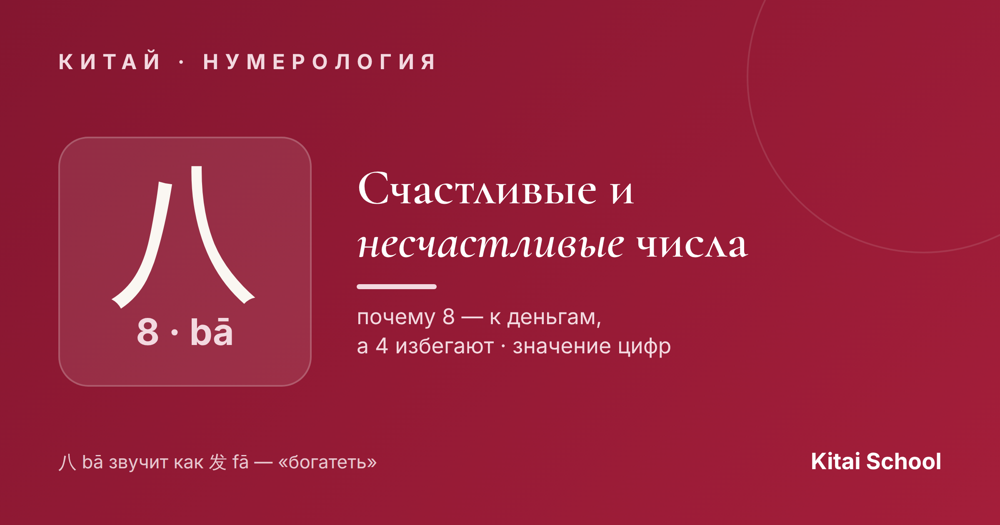
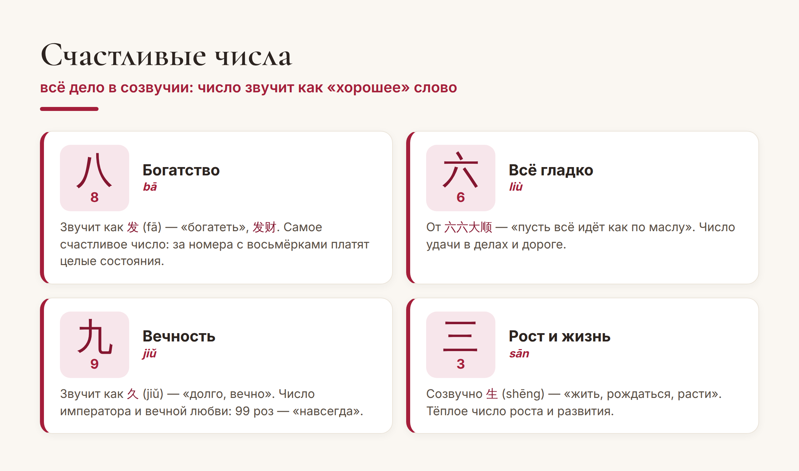
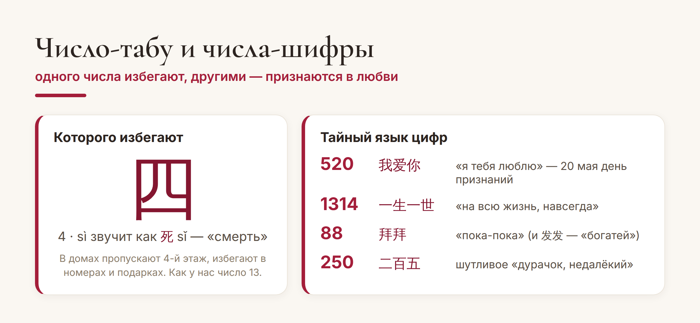

Китай · культура

В Китае числа — это не просто цифры. Одни приносят удачу и богатство, других по-настоящему избегают: пропускают этажи в домах, не дарят подарки «неправильными» комплектами и платят огромные деньги за «счастливые» номера. Разберёмся, что означают цифры в китайской нумерологии — и почему цифра 8 в Китае самая желанная.
Весь секрет — в созвучиях. Китайский полон омонимов: число звучит почти как какое-то слово, и «наследует» его смысл. Поехали по числам.
Восьмёрка — самое счастливое число в Китае. Причина проста: 八 (bā, «восемь») звучит почти как 发 (fā) из слова 发财 (fācái) — «разбогатеть». Поэтому 8 означает богатство и процветание.
Это не суеверие «на словах», а вполне реальные деньги: за автомобильные номера и телефоны с восьмёрками платят целые состояния, свадьбы назначают на даты с 8, а цену специально делают вроде 88 или 888 юаней. Не случайно и Олимпиаду в Пекине открыли 8 августа 2008 года в 8 часов 8 минут — 08.08.08.
Восьмёрка — не единственная «удачливая». Вот главные счастливые числа Китая и что каждое из них означает:

Коротко про каждое:
Число 6 (六, liù) — «всё пройдёт гладко», от пожелания 六六大顺. Отсюда любовь к 66 и 666.
Число 9 (九, jiǔ) звучит как 久 (jiǔ) — «долго, вечно». Что означает цифра 9 в Китае — вечность и постоянство: это было число императора, а 99 роз дарят со смыслом «люблю навсегда».
Число 3 (三, sān) созвучно 生 (shēng) — «жить, рождаться, расти». Тёплое число жизни и развития.
А что означает цифра 5? Число 5 (五, wǔ) — само по себе нейтральное, но связано с гармонией пяти стихий 五行. В сочетаниях оно усиливает смысл: например, 520 читается как «я тебя люблю» (об этом ниже).
Есть у чисел и обратная сторона. Главное «несчастливое» число Китая — четвёрка: 四 (sì, «четыре») звучит почти как 死 (sǐ) — «смерть». Это называют тетрафобией, и она вполне ощутима в быту.

Из-за этого в китайских домах и больницах часто нет 4-го этажа (а иногда и 14-го, 24-го — со всеми, где есть четвёрка), в лифте на месте этих кнопок стоят буквы. Номер с 4 стоит дешевле, а дарить что-то в количестве четырёх штук не принято. По сути, четвёрка в Китае — как число 13 у нас.
А ещё числами китайцы… разговаривают. В соцсетях и мессенджерах цифровые «шифры» заменяют целые фразы — тоже по созвучию. Самые популярные вы видели на картинке выше: 520 — «я тебя люблю» (и даже отдельный «день признаний» 20 мая), 1314 — «на всю жизнь», 88 — «пока-пока». А вот 250 лучше никого не называть: это шутливое «дурачок».
На практике. Если поедете в Китай — обратите внимание на цены, номера машин и этажи: восьмёрки повсюду, а четвёрок будто избегают. Понимая логику чисел, вы будете считывать эти сигналы как местный — и это отличный повод учить язык дальше.
Вот и вся китайская нумерология в двух словах: за каждым числом стоит слово-созвучие, а значит — смысл. 8 — богатство, 9 — вечность, 6 — удача, а 4 избегают. Теперь вы знаете, что значит цифра 8 в Китае и почему её так любят.
Пусть у вас всё будет на восьмёрку! 八八大发。